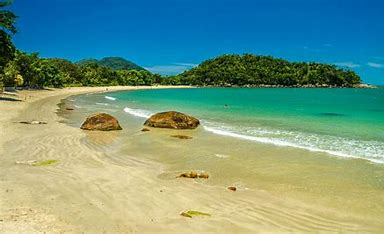

MAIS INFORMAÇÕES SOBRE A PRAIA:
Localização: Ubatuba, estado de São Paulo, Brasil.A entrada principal para a Praia do Lázaro é através do condomínio Pedra Verde, na altura do km 68,5 da Rodovia Rio-Santos
Descrição Detalhada da Praia de Domingas Dias
A Praia de Domingas Dias é conhecida por sua beleza natural e tranquilidade. Com aproximadamente 500 metros de extensão, ela possui um formato de ferradura e é cercada pela Mata Atlântica, o que proporciona um visual deslumbrante e uma sensação de isolamento e paz.
Características Principais:
- Águas Cristalinas e Calmas: O mar é calmo, com águas claras que mais parecem uma piscina natural, ideal para banho e para famílias com crianças.
- Ambiente Preservado: A praia é bem preservada, sem quiosques ou barracas fixas, o que mantém seu aspecto rústico e natural.
- Acesso: Pode ser acessada a pé pela Praia do Lázaro ou de carro, estacionando no condomínio Pedra Verde, onde é cobrada uma taxa de estacionamento.
- Natureza ao Redor: Cercada por vegetação nativa, a praia oferece trilhas e grandes pedras nas extremidades, perfeitas para quem gosta de explorar e apreciar a vista.
Atividades:
- Mergulho e Natação:As águas calmas são perfeitas para mergulho e natação.
- Caminhadas: Há trilhas na mata ao redor que permitem um contato direto com a natureza.
- Relaxamento: Ideal para quem busca um lugar tranquilo para relaxar, longe das praias mais movimentadas.